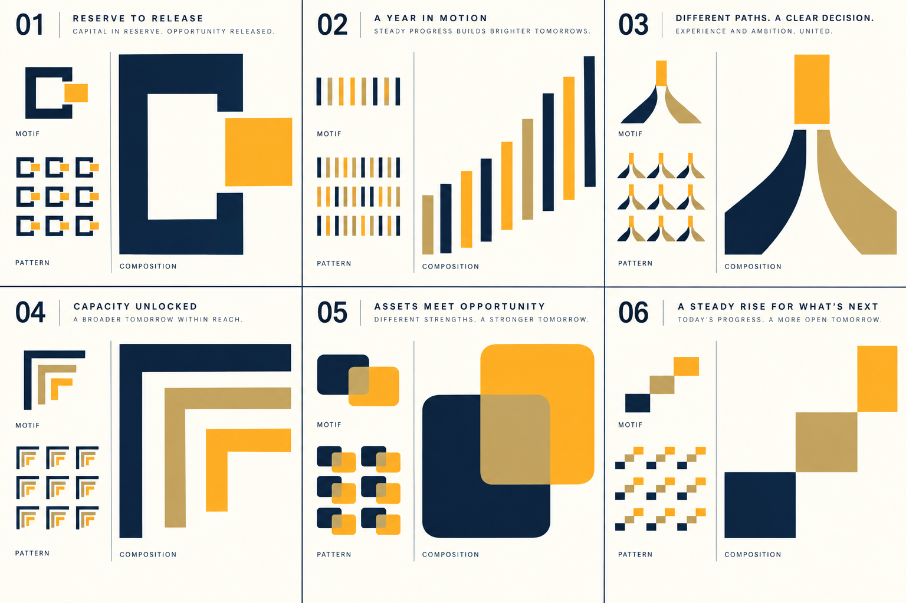
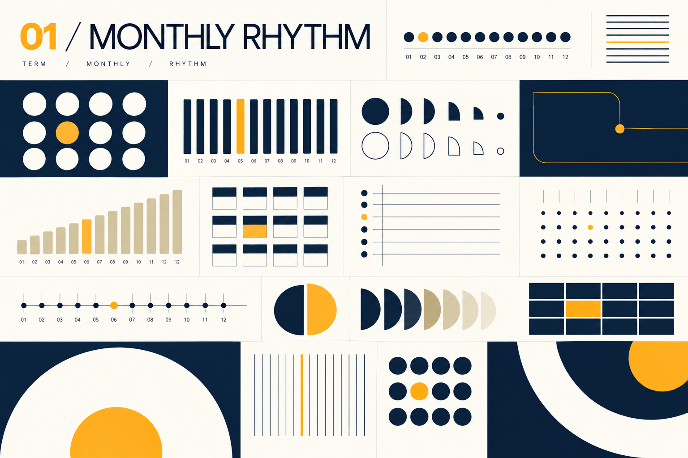

01 · zes vormfamilies
Verschillende grammatica’s, één domein
Elke richting vertrekt vanuit een ander kenmerk van financiering: ruimte vrijmaken, vaste maandtermijnen, meerdere perspectieven naar één besluit brengen, capaciteit openen, assets en kansen verbinden, of groei stap voor stap opbouwen. Kies de vormfamilies die het meest als Revive voelen; daarna werken we hun geometrie en gebruik verder uit.

02 · verdieping · vaste termijnen
Monthly Rhythm
Een patroon opgebouwd uit twaalf terugkerende eenheden. Variaties in maat, interval en markering geven ruimte aan termijnen, voortgang en een beslissend moment. Dezelfde eenvoudige vorm kan als stip, staaf, uitsnede of groot kleurvlak werken.
